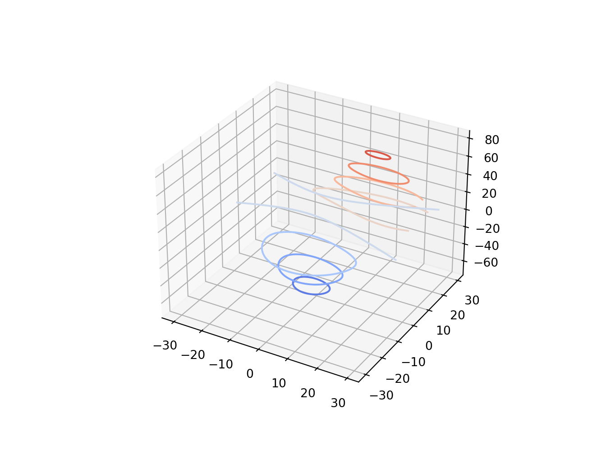

Ch. 4 Math
library(reticulate)
reticulate::use_condaenv("r-torch")# https://www.geeksforgeeks.org/plot-mathematical-expressions-in-python-using-matplotlib/
# Import libraries
import matplotlib.pyplot as plt
import numpy as np
x = np.linspace(-6, 6, 50)
fig = plt.figure(figsize = (14, 8))
# Plot y = cos(x)
y = np.cos(x)
plt.plot(x, y, 'b', label ='cos(x)')
# Plot degree 2 Taylor polynomial
y2 = 1 - x**2 / 2
plt.plot(x, y2, 'r-.', label ='Degree 2')
# Plot degree 4 Taylor polynomial
y4 = 1 - x**2 / 2 + x**4 / 24
plt.plot(x, y4, 'g:', label ='Degree 4')
# Add features to our figure
plt.legend()
plt.grid(True, linestyle =':')
plt.xlim([-6, 6])
plt.ylim([-4, 4])
plt.title('Taylor Polynomials of cos(x) at x = 0')
plt.xlabel('x-axis')
plt.ylabel('y-axis')
# Show plot
plt.show() 
# https://www.kaggle.com/sskiing/matplotlib-showcase-examples
import numpy as np
import matplotlib.pyplot as plt
from matplotlib.patches import Polygon
def func(x):
return (x - 3) * (x - 5) * (x - 7) + 85
a, b = 2, 9 # integral limits
x = np.linspace(0, 10)
y = func(x)
fig, ax = plt.subplots(dpi=200)
plt.plot(x, y, 'r', linewidth=2)
plt.ylim(ymin=0)
# Make the shaded region
ix = np.linspace(a, b)
iy = func(ix)
verts = [(a, 0)] + list(zip(ix, iy)) + [(b, 0)]
poly = Polygon(verts, facecolor='0.9', edgecolor='0.5')
ax.add_patch(poly)
plt.text(0.5 * (a + b), 30, r"$\int_a^b f(x)\mathrm{d}x$",
horizontalalignment='center', fontsize=20)
plt.figtext(0.9, 0.05, '$x$')
plt.figtext(0.1, 0.9, '$y$')
ax.spines['right'].set_visible(False)
ax.spines['top'].set_visible(False)
ax.xaxis.set_ticks_position('bottom')
ax.set_xticks((a, b))
ax.set_xticklabels(('$a$', '$b$'))
ax.set_yticks([])
plt.show()
4.1 Middle
# ===================================
# 3D wireframe plots in one direction
# ===================================
# Demonstrates that setting rstride or cstride to 0 causes wires to not be
# generated in the corresponding direction.
from mpl_toolkits.mplot3d import axes3d
import matplotlib.pyplot as plt
fig, [ax1, ax2] = plt.subplots(2, 1, figsize=(8, 12), subplot_kw={'projection': '3d'})
# Get the test data
X, Y, Z = axes3d.get_test_data(0.05)
# Give the first plot only wireframes of the type y = c
ax1.plot_wireframe(X, Y, Z, rstride=10, cstride=0)
ax1.set_title("Column (x) stride set to 0")
# Give the second plot only wireframes of the type x = c
ax2.plot_wireframe(X, Y, Z, rstride=0, cstride=10)
ax2.set_title("Row (y) stride set to 0")
plt.tight_layout()
plt.show()
import matplotlib.pyplot as plt
import numpy as np
t = np.arange(0.0, 2.0, 0.01)
s1 = np.sin(2 * np.pi * t)
s2 = np.exp(-t)
s3 = s1 * s2
fig, axs = plt.subplots(3, 1, sharex=True)
# Remove horizontal space between axes
fig.subplots_adjust(hspace=0)
# Plot each graph, and manually set the y tick values
axs[0].plot(t, s1)
axs[0].set_yticks(np.arange(-0.9, 1.0, 0.4))
axs[0].set_ylim(-1, 1)
axs[1].plot(t, s2)
axs[1].set_yticks(np.arange(0.1, 1.0, 0.2))
axs[1].set_ylim(0, 1)
axs[2].plot(t, s3)
axs[2].set_yticks(np.arange(-0.9, 1.0, 0.4))
axs[2].set_ylim(-1, 1)
plt.show()
# https://matplotlib.org/gallery/mplot3d/offset.html#sphx-glr-gallery-mplot3d-offset-py
# This import registers the 3D projection, but is otherwise unused.
from mpl_toolkits.mplot3d import Axes3D # noqa: F401 unused import
import matplotlib.pyplot as plt
import numpy as np
fig = plt.figure()
ax = fig.gca(projection='3d')
X, Y = np.mgrid[0:6*np.pi:0.25, 0:4*np.pi:0.25]
Z = np.sqrt(np.abs(np.cos(X) + np.cos(Y)))
ax.plot_surface(X + 1e5, Y + 1e5, Z, cmap='autumn', cstride=2, rstride=2)
ax.set_xlabel("X label")
ax.set_ylabel("Y label")
ax.set_zlabel("Z label")
ax.set_zlim(0, 2)
plt.show()
# http://www.scipy-lectures.org/intro/matplotlib/auto_examples/plot_plot3d_ex.html
import numpy as np
import matplotlib.pyplot as plt
from mpl_toolkits.mplot3d import Axes3D
fig = plt.figure()
ax = Axes3D(fig)
X = np.arange(-4, 4, 0.25)
Y = np.arange(-4, 4, 0.25)
X, Y = np.meshgrid(X, Y)
R = np.sqrt(X ** 2 + Y ** 2)
Z = np.sin(R)
ax.plot_surface(X, Y, Z, rstride=1, cstride=1, cmap=plt.cm.hot)
ax.contourf(X, Y, Z, zdir='z', offset=-2, cmap=plt.cm.hot)
ax.set_zlim(-2, 2)
plt.show()
# https://www.python-course.eu/matplotlib_multiple_figures.php
import numpy as np
import matplotlib.pyplot as plt
def f(t):
return np.exp(-t) * np.cos(2*np.pi*t)
def g(t):
return np.sin(t) * np.cos(1/(t+0.1))
t1 = np.arange(0.0, 5.0, 0.1)
t2 = np.arange(0.0, 5.0, 0.02)
plt.subplot(212)
plt.plot(t1, g(t1), 'ro', t2, f(t2), 'k')
plt.grid(color='b', alpha=0.5, linestyle='dashed', linewidth=0.5)
plt.show()
# https://github.com/matplotlib/matplotlib/blob/master/examples/mplot3d/surface3d_radial.py
from mpl_toolkits.mplot3d import Axes3D # noqa: F401 unused import
import matplotlib.pyplot as plt
import numpy as np
fig = plt.figure()
ax = fig.add_subplot(111, projection='3d')
# Create the mesh in polar coordinates and compute corresponding Z.
r = np.linspace(0, 1.25, 50)
p = np.linspace(0, 2*np.pi, 50)
R, P = np.meshgrid(r, p)
Z = ((R**2 - 1)**2)
# Express the mesh in the cartesian system.
X, Y = R*np.cos(P), R*np.sin(P)
# Plot the surface.
ax.plot_surface(X, Y, Z, cmap=plt.cm.YlGnBu_r)
# Tweak the limits and add latex math labels.
ax.set_zlim(0, 1)
ax.set_xlabel(r'$\phi_\mathrm{real}$')
ax.set_ylabel(r'$\phi_\mathrm{im}$')
ax.set_zlabel(r'$V(\phi)$')
plt.show()
# https://github.com/matplotlib/matplotlib/blob/master/examples/mplot3d/wire3d.py
from mpl_toolkits.mplot3d import axes3d
import matplotlib.pyplot as plt
fig = plt.figure()
ax = fig.add_subplot(111, projection='3d')
# Grab some test data.
X, Y, Z = axes3d.get_test_data(0.05)
# Plot a basic wireframe.
ax.plot_wireframe(X, Y, Z, rstride=10, cstride=10)
plt.show()
from mpl_toolkits.mplot3d import Axes3D # noqa: F401 unused import
import numpy as np
import matplotlib.pyplot as plt
fig = plt.figure()
ax = fig.gca(projection='3d')
# Plot a sin curve using the x and y axes.
x = np.linspace(0, 1, 100)
y = np.sin(x * 2 * np.pi) / 2 + 0.5
ax.plot(x, y, zs=0, zdir='z', label='curve in (x,y)')
# Plot scatterplot data (20 2D points per colour) on the x and z axes.
colors = ('r', 'g', 'b', 'k')
# Fixing random state for reproducibility
np.random.seed(19680801)
x = np.random.sample(20 * len(colors))
y = np.random.sample(20 * len(colors))
c_list = []
for c in colors:
c_list.extend([c] * 20)
# By using zdir='y', the y value of these points is fixed to the zs value 0
# and the (x,y) points are plotted on the x and z axes.
ax.scatter(x, y, zs=0, zdir='y', c=c_list, label='points in (x,z)')
# Make legend, set axes limits and labels
ax.legend()
ax.set_xlim(0, 1)
ax.set_ylim(0, 1)
ax.set_zlim(0, 1)
ax.set_xlabel('X')
ax.set_ylabel('Y')
ax.set_zlabel('Z')
# Customize the view angle so it's easier to see that the scatter points lie
# on the plane y=0
ax.view_init(elev=20., azim=-35)
plt.show()
# https://matplotlib.org/2.0.2/examples/mplot3d/contour3d_demo.html
from mpl_toolkits.mplot3d import axes3d
import matplotlib.pyplot as plt
from matplotlib import cm
fig = plt.figure()
ax = fig.add_subplot(111, projection='3d')
X, Y, Z = axes3d.get_test_data(0.05)
cset = ax.contour(X, Y, Z, cmap=cm.coolwarm)
ax.clabel(cset, fontsize=9, inline=1)
plt.show()